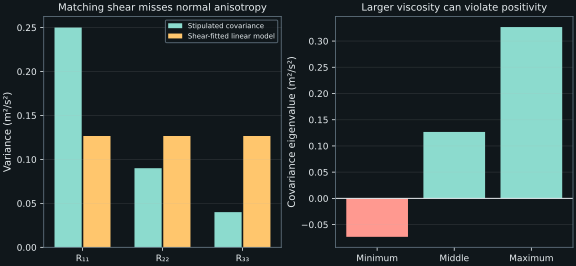

10. Eddy viscosity and mixing length
The exact mean equation asks for six covariance components. A scalar eddy viscosity replaces their unrestricted directional response with a particular tensor relation to the mean strain. This is a strong modeling choice, even when the resulting mean flow is useful. We will test the relation by its trace, eigenvalues, derivative terms and wall limits before using dimensional analysis to introduce a two-equation alternative.
Lessons 28–31 move from wall-layer descriptions to the Boussinesq hypothesis, the reason for its isotropic energy term, algebraic mixing length, and the dimensional basis of \(k\)–\(\epsilon\) viscosity. The development below retains the lecture's sequence while supplying the symmetric-gradient factors, variable-coefficient product rules and explicit restrictions needed for a consistent implementation.
10.1 A wall law is an additional relation, not the total-stress identity L28 · 00:17
Use the positive wall-shear convention of chapter 9, with friction velocity \(u_\tau=\sqrt{\tau_w/\rho}\), viscous length \(\ell_\nu=\nu/u_\tau\), \(U^+=U/u_\tau\), and \(y^+=y/\ell_\nu\). Density \(\rho\) and molecular kinematic viscosity \(\nu\) are positive constants. In an approximately constant-stress region, the relation \(\nu U_y-R_{12}\approx u_\tau^2\) supplies the total shear, but does not determine the mean velocity gradient. We still need to know how its molecular and turbulent parts divide the load.
The source introduces the empirical logarithmic form
where \(\log\) means natural logarithm, \(\kappa\gt 0\) is the von Kármán coefficient, and \(B\) is an additive constant. The lecture uses \(\kappa=0.41\) and \(B=5.2\), while noting other fitted values. These are example values for appropriate smooth-wall data, not exact universal constants or a license to apply the formula at the wall. It diverges as \(y^+\to0\), whereas the actual smooth-wall velocity tends to zero linearly. A rough wall, pressure gradient, insufficient scale separation or other departures from the intended regime require reconsideration.
Differentiation gives \(dU^+/dy^+=1/(\kappa y^+)\), or \(U_y=u_\tau/(\kappa y)\). This gradient can be consistent with a turbulent-stress-dominated overlap region. It cannot determine the near-wall dissipation by itself. The lecture emphasizes that inferring wall shear away from the wall does not recover the complete gradient statistics or the destruction budget near it. A successful friction estimate is therefore a narrower result than an accurate wall-resolved energy budget.
The asymptotic linear limit \(U^+\sim y^+\) follows from smooth no slip, finite wall shear and vanishing turbulent covariance. The finite extent of that approximation, and a useful finite logarithmic interval with particular constants, require additional evidence. One should distinguish an asymptotic consequence of the boundary conditions from an empirical fit over a finite range.
10.2 State the Boussinesq relation with a fixed stress convention L28 · 12:29
Let \(U_i=\mathbb E[u_i]\), \(u_i'=u_i-U_i\), \(R_{ij}=\mathbb E[u_i'u_j']\), and \(k=R_{ii}/2\). The positive covariance \(R\) is distinct from the effective stress \(-\rho R\) entering mean momentum. Define mean strain \(S_{ij}=(\partial_jU_i+\partial_iU_j)/2\), with \(\partial_iU_i=0\). The incompressible linear eddy-viscosity hypothesis is
Here \(\delta_{ij}\) is the Kronecker delta and \(\nu_t\) is kinematic eddy viscosity, in \(\mathrm{m^2\,s^{-1}}\). Dynamic eddy viscosity is \(\mu_t=\rho\nu_t\), in \(\mathrm{Pa\,s}\). Keeping these units explicit prevents a density factor from being lost when a code uses \(\mu_t\) but a derivation uses \(\nu_t\). The coefficient is a turbulence closure field rather than the material's molecular viscosity; it is not a directly resolved vortex.
The official TMBWG implementation specification writes a negative density-weighted stress with symmetric mean strain and an isotropic energy contribution. Its compressible relation also removes the dilatation trace and uses Favre, or density-weighted, averages. Our formula is its constant-density zero-dilatation specialization, with covariance sign and density translated explicitly. It should not be copied unchanged into a variable-density derivation. This use of the name Boussinesq concerns turbulent stress closure, rather than the distinct density/buoyancy approximation carrying the same name.
The modeled tensor has six entries but only two additional scalar fields, \(\nu_t\) and \(k\), once the mean strain is known. This reduction is not yet closure: equations or algebraic relations for those scalars are required. The tensor relation is linear in \(S\) for fixed \(\nu_t,k\). If the viscosity depends on the strain or other solution fields, the full coupled model can still be nonlinear.
Substitute the stress relation into incompressible constant-property mean momentum. Retaining the symmetric molecular stress gives
The factor two in \(2\nu_tS_{ij}\) has canceled the one half in the definition of \(S\); it must not multiply the expanded pair a second time. Define modified pressure \(P^\star=P+(2/3)\rho k\). Then the first two gradients combine as \(-\partial_iP^\star/\rho\). The isotropic term has been absorbed into a pressure variable, not set to zero. Physical mean pressure is recovered as \(P=P^\star-(2/3)\rho k\); comparisons with pressure measurements must respect that distinction.
Incompressibility does remove \((\nu+\nu_t)\partial_j\partial_iU_j\). It does not remove the derivative of a variable \(\nu_t\):
The second contribution vanishes for a constant coefficient, or under additional special geometry, but not for a general eddy-viscosity field. Replacing the full tensor divergence by a componentwise variable diffusion operator without this term changes the modeled momentum equation.
A missing force that cannot be hidden entirely in pressure
Take an incompressible test mean \(\boldsymbol U=(S y,0,0)\) and prescribe \(\nu_t=\nu_0(1+x^2/L^2)\), with \(S,\nu_0,L\) constant and positive. This is an operator test, not a complete modeled-flow solution. Componentwise diffusion \(\partial_j(\nu_t\partial_jU_i)\) vanishes because \(U\) changes only in \(y\) while \(\nu_t\) changes only in \(x\). But the symmetric-stress divergence has a normal component \((\partial_x\nu_t)S=2\nu_0 Sx/L^2\).
For \(S=100\ \mathrm{s^{-1}}\), \(\nu_0=0.001\ \mathrm{m^2\,s^{-1}}\), \(L=1\ \mathrm m\), \(x=0.5\ \mathrm m\), the omitted acceleration is \(0.1\ \mathrm{m\,s^{-2}}\). The curl of the omitted vector has component \(2\nu_0S/L^2=0.2\ \mathrm{s^{-2}}\), so that missing force is not generally a pure pressure gradient. The error persists despite exactly zero mean divergence.
10.3 The trace fixes the isotropic coefficient without assuming actual isotropy L29 · 00:16
Suppose the modeled covariance were \(R_{ij}=a k\delta_{ij}-2\nu_tS_{ij}\), with an unknown dimensionless coefficient \(a\). Taking a trace gives \(R_{ii}=3ak-2\nu_tS_{ii}\). Incompressibility makes \(S_{ii}=0\), and the definition \(R_{ii}=2k\) gives \(a=2/3\) for nonzero \(k\). The same value also gives the correct continuous zero-energy limit. The Kronecker trace is \(\delta_{ii}=3\); each diagonal delta equals one, and their sum equals three.
This argument does not assume that the actual turbulence is isotropic. Every symmetric covariance can be decomposed exactly as \(R=(2k/3)I+R^{\rm dev}\), with \(\operatorname{tr}R^{\rm dev}=0\). The model hypothesis concerns the deviatoric part: \(R^{\rm dev}=-2\nu_tS\). For statistically isotropic second moments the deviatoric part vanishes and each component variance is \(2k/3\); that special case illustrates the coefficient but is not required to define the trace decomposition.
In the recurring fully developed Couette mean \(U_1=U(y),U_2=U_3=0\), all diagonal mean-strain components vanish, while \(S_{12}=S_{21}=U_y/2\). The model therefore predicts
Omitting the isotropic term would predict zero normal variances in this shear, inconsistent with nonzero turbulent energy. Keeping it preserves the trace but forces equal normal variances, unlike the unequal normal rms components described in the instructor's DNS. Thus correcting a zero-variance failure is not the same as recovering the actual component physics.
Fit the shear and inspect what remains wrong
Use the stipulated local covariance from chapter 6, with normal entries \(0.25,0.09,0.04\), shear covariance \(-0.08\), and \(U_y=100\), in consistent SI units. Its \(k\) is \(0.19\ \mathrm{m^2\,s^{-2}}\). The viscosity fitting the shear is \(\nu_t=-R_{12}/U_y=0.0008\ \mathrm{m^2\,s^{-1}}\). All three modeled normal variances are \(2k/3=0.1266667\), although the fitted shear remains exact.
Neither choosing a different positive scalar coefficient nor refining the mesh can make this same linear relation recover all three unequal diagonal entries for this mean strain. That is a constitutive limitation, distinct from numerical error. A more suitable closure may require additional tensor dependence, stress transport or another representation of the missing dynamics.
The source notes possible compressible applications. In that setting the relevant covariance is density weighted, the trace-subtracted strain matters, and energy/temperature correlations can require further closures. A numerical Mach value alone is not a universal guarantee that every incompressible assumption remains adequate. This chapter develops no compressible model correction; it keeps the constant-property scope explicit.
10.4 Scalar viscosity restricts anisotropy; it does not make the tensor isotropic L30 · 00:14
A linear eddy-viscosity tensor need not have equal normal entries in every flow. If \(S_{11}\ne S_{22}\), its modeled \(R_{11}\) and \(R_{22}\) differ. It can also contain shear covariance. Calling every such tensor “isotropic” would therefore be incorrect, as lesson 30 emphasizes. The sharper restriction is that its deviatoric covariance is proportional to the instantaneous local mean-strain tensor. They share eigenvectors, with eigenvalues related by one scalar multiplier.
This alignment cannot represent every anisotropic response or memory effect. It has no independent way to orient the covariance differently from the local strain, and it gives the Couette normal-stress limitation just demonstrated. The isotropic \(k\) term fixes the trace; it does not itself impose equal total diagonal entries when the mean has normal strain.
The model also restricts scalar energy production. With incompressibility and nonnegative \(\nu_t\),
Symmetric covariance contracts only with symmetric strain, and the isotropic contribution contracts with its zero trace. Thus this closure cannot produce the negative mean-to-fluctuation exchange allowed by the exact equation while retaining \(\nu_t\ge0\). The nonnegative production is a model property, not a general theorem about turbulence.
Even \(k\ge0\) and \(\nu_t\ge0\) do not guarantee a positive semidefinite covariance. If \(\lambda_\alpha\) are the eigenvalues of \(S\), the modeled covariance eigenvalues are \(2k/3-2\nu_t\lambda_\alpha\). Every one must be nonnegative to represent nonnegative variance in every direction. For \(\nu_t\gt 0\), this requires \(\lambda_{\max}\le k/(3\nu_t)\). Trace preservation alone does not enforce that bound.
For simple positive shear \(S=U_y\), strain eigenvalues are \(S/2,-S/2,0\); covariance eigenvalues are \(2k/3-\nu_tS,\ 2k/3+\nu_tS,\ 2k/3\). With \(k=0.19\) and \(\nu_t=0.002\), the smallest is \(-0.0733333\ \mathrm{m^2\,s^{-2}}\). The predicted coordinate variances are still positive and the production is positive, yet a rotated direction has a negative variance. This is a realizability failure detectable without running a full CFD calculation.

A related near-wall pressure clarification is useful before closing the model. In a fully developed pressure-driven channel, sufficiently near the wall the turbulent-stress derivative becomes small, giving \(\nu U_{yy}\approx P_x/\rho\). Pressure acceleration balances molecular curvature, with acceleration units on both sides. It does not directly balance the stress \(\nu U_y\), which has different units. In Couette flow with \(P_x=0\), leading linear velocity has \(U_{yy}=0\), so no nonzero pressure acceleration is required for that linear sublayer.
10.5 Count turbulence transport equations and declare the dimensional scales L30 · 09:30
In the terminology used here, a zero-equation turbulence model adds no turbulence transport equation: it supplies an algebraic relation. Mean continuity and momentum still need to be solved. A one-equation model adds one transported turbulence variable, and a two-equation model adds two. These names do not count every equation in the entire flow system or guarantee that two models in the same class use the same variables.
In conventional RANS, fluctuations relative to the chosen averaging operation enter through modeled statistics. A large recirculation in the computed mean is not automatically a resolved turbulent eddy. Unsteady RANS may retain time dependence of a mean or organized motion, depending on its averaging interpretation; it does not become a scale-resolving method merely because the solution oscillates. The chapter's distinction is between what the averaging removes and what the numerical solution explicitly represents.
Dimensionally, a kinematic eddy viscosity can be formed as a velocity times a length, a squared length divided by a time, or a squared velocity times a time. Those products all have units \(\mathrm{m^2\,s^{-1}}\). Dimensional consistency narrows the options but does not select which physical scales should matter, fix a dimensionless coefficient, or validate a constitutive relation. Turbulence has a range of interacting lengths and times; a single statistical scale is a reduction of that range, not an identification of one universal vortex.
The NASA Wind-US model-selection documentation explicitly distinguishes algebraic, one-equation and two-equation options and includes an unsteady-RANS setting. Its documented algebraic models also caution against reading the lecture's criticism of a simple mixing-length formula as proof that every algebraic model has ceased to exist. Documentation of an option is not evidence of its current usage prevalence or accuracy for a new application.
10.6 A bare mixing length gives a useful model to interrogate L31 · 00:25
For a wall shear flow, take a dimensional mixing length \(\ell_m=\kappa y\). A positive scalar viscosity model is
The gradient has inverse-time units, not time units; its inverse is a shear time when nonzero. Length squared times an inverse time gives the required kinematic-viscosity units. The absolute value keeps \(\nu_t\) nonnegative under shear reversal. The modeled shear covariance is \(R_{12}=-\ell_m^2|U_y|U_y\), so its sign reverses with the mean shear.
This formula is local and geometric. It does not transport a separately evolving turbulence time or length, so upstream history and nonequilibrium response are absent except through the current mean field and supplied geometry. It also does not define \(k\). For an incompressible mean-flow computation, an isotropic \(k\) gradient may be absorbed into modified pressure, but normal stresses, physical pressure and turbulent-energy outputs still need appropriate information. A formula for \(\nu_t\) alone has not supplied every statistical quantity.
At a smooth wall with finite \(U_y\), this bare \(\nu_t\) tends to zero like \(y^2\). That gives a zero turbulent shear at the wall, but its near-wall power is not the exact smooth-wall \(R_{12}=O(y^3)\) established in chapter 9. Vanishing at the boundary is a weaker condition than having the correct asymptotic behavior. Damping and other modifications can change the near-wall response, but each is a further model choice.
For a zero-turbulence freestream, the product \(y^2|U_y|\) tends to zero only if the mean gradient decays sufficiently rapidly; a vanishing gradient alone does not specify the limit of that product as \(y\to\infty\). Moreover, nonzero freestream turbulence need not be represented by a local mean shear at all. A wall-normal coordinate is useful for a wall layer, but the same \(\ell_m=\kappa y\) cannot simply be carried into a jet or mixing layer without choosing a different relevant length. These are restrictions of this particular formula, not a theorem forbidding other algebraic closures in free shear flows.
Derive the mean profile predicted by the bare formula
Assume positive shear, exactly constant kinematic total stress \(u_\tau^2\), and the bare mixing length. In wall units let \(s=y^+\) and \(g(s)=dU^+/ds\). Total stress becomes
The stable expression for the positive root avoids subtracting nearly equal numbers at small \(s\). At the wall it tends to one; at large \(s\) it tends to \(1/(\kappa s)\), consistent with a logarithmic gradient. Integrate exactly by setting \(z=2\kappa s=\sinh t\). Since \(dU^+=\kappa^{-1}\cosh t/(1+\cosh t)\,dt\), integration from the wall gives
The large-\(s\) intercept is \(B_{\rm bare}=[\log(4\kappa)-1]/\kappa\). For \(\kappa=0.41\), it is approximately \(-1.23245\), far from the lecture's empirical \(5.2\). Recovering a logarithmic slope has not recovered the empirical profile. The bare formula adds turbulent transport too early near the wall and requires further treatment to represent a useful finite buffer/overlap profile.
This calculation is conditional on its constant-stress and local shear assumptions. It is not a solved developing boundary layer, and the limiting large-\(s\) expression should not be extended outside a region where those assumptions hold. Its value is diagnostic: a simple, reproducible model can satisfy wall value and logarithmic slope tests while failing the intercept and near-wall order.
10.7 Replace a prescribed geometric scale with transported statistical scales L31 · 14:56
Lesson 31 next introduces \(\sqrt{k}\) as a turbulent velocity scale and \(k/\epsilon\) as a time scale, where \(\epsilon\gt 0\) is the destruction rate of \(k\) in the chosen convention. Their associated length is \(k^{3/2}/\epsilon\). These are statistical scales: dimensional analysis does not establish that they equal the speed, lifetime and size of a particular eddy.
Suppose the only dimensional inputs to \(\nu_t\) are \(k\), in \(\mathrm{m^2\,s^{-2}}\), and \(\epsilon\), in \(\mathrm{m^2\,s^{-3}}\), and write \(\nu_t=C_\mu k^a\epsilon^b\). Matching length and time exponents gives
The dimensionless coefficient \(C_\mu\) has not been determined by this argument, and additional dimensionless dependencies can remain. The relation also needs its domain: nonnegative \(k\), positive \(\epsilon\), and suitable treatment of zeros and near-wall limits. A raw division by a numerically vanishing \(\epsilon\) is not a complete model specification. Equations, boundary conditions and coefficients for \(k,\epsilon\) are the next chapter's task.
For \(k=0.19\ \mathrm{m^2\,s^{-2}}\) and a stipulated \(\epsilon=0.5\ \mathrm{m^2\,s^{-3}}\), the time scale is \(0.38\ \mathrm s\), the length is \(k^{3/2}/\epsilon\), and \(\nu_t/C_\mu=0.0722\ \mathrm{m^2\,s^{-1}}\). Leaving \(C_\mu\) symbolic keeps this dimensional construction separate from selecting and validating a named \(k\)–\(\epsilon\) variant.
The following standard-library program executes the covariance, variable-coefficient and mixing-length checks. The tensor eigenvalues are analytic for the selected simple shear. The mixing-length profile is evaluated from its closed form, with its local quadratic balance checked directly. None of the inputs labeled stipulated are experimental measurements.
"""Tensor closure and bare mixing-length checks, not a fitted RANS solver."""
from math import asinh, log, sqrt
S, k = 100.0, 0.19
measured_diag = [0.25, 0.09, 0.04]
measured_shear = -0.08 # Stipulated covariance, not experimental data.
fitted_nu = -measured_shear / S
print(f"eddy viscosity fitting stipulated shear m2/s: {fitted_nu:.8f}")
print("stipulated normal variances:", measured_diag)
for nu_t in (fitted_nu, 0.002):
d = 2 * k / 3
eig = [d - nu_t * S, d, d + nu_t * S]
print(
f"nu_t={nu_t:.6f}: predicted diagonal={d:.8f}, "
f"eigenvalues={','.join((f'{x:.8f}' for x in eig))}, "
f"production={nu_t * S * S:.6f}"
)
# U=(S*y,0,0), nu_t=nu0*(1+x*x/L**2).
nu0, x, L = 0.001, 0.5, 1.0
missing_normal_force = 2 * nu0 * x * S / L**2
print(
f"variable-viscosity missing normal acceleration m/s2: "
f"{missing_normal_force:.8f}"
)
print(f"curl of missing acceleration 1/s2: {2 * nu0 * S / L ** 2:.8f}")
kappa, B = 0.41, 5.2
for s in (1.0, 5.0, 30.0, 100.0):
z = 2 * kappa * s
g = 2 / (1 + sqrt(1 + z * z))
velocity = (asinh(z) - z / (1 + sqrt(1 + z * z))) / kappa
residual = g + (kappa * s) ** 2 * g * g - 1
assert abs(residual) < 1e-12
print(
f"bare mixing y+={s:.0f}: gradient={g:.8f}, U+={velocity:.8f}, "
f"illustrative log U+={log(s) / kappa + B:.8f}"
)
print(f"bare mixing asymptotic intercept: {(log(4 * kappa) - 1) / kappa:.8f}")
epsilon = 0.5
print(f"k/epsilon time s: {k / epsilon:.8f}")
print(f"k^(3/2)/epsilon length m: {k ** 1.5 / epsilon:.8f}")
print(f"eddy viscosity divided by C_mu m2/s: {k * k / epsilon:.8f}")
Observed output:
eddy viscosity fitting stipulated shear m2/s: 0.00080000 stipulated normal variances: [0.25, 0.09, 0.04] nu_t=0.000800: predicted diagonal=0.12666667, eigenvalues=0.04666667,0.12666667,0.20666667, production=8.000000 nu_t=0.002000: predicted diagonal=0.12666667, eigenvalues=-0.07333333,0.12666667,0.32666667, production=20.000000 variable-viscosity missing normal acceleration m/s2: 0.10000000 curl of missing acceleration 1/s2: 0.20000000 bare mixing y+=1: gradient=0.87213877, U+=0.95276261, illustrative log U+=5.20000000 bare mixing y+=5: gradient=0.38312785, U+=3.25188524, illustrative log U+=9.12545832 bare mixing y+=30: gradient=0.07806305, U+=7.16129513, illustrative log U+=13.49560337 bare mixing y+=100: gradient=0.02409462, U+=10.02932773, illustrative log U+=16.43212240 bare mixing asymptotic intercept: -1.23244819 k/epsilon time s: 0.38000000 k^(3/2)/epsilon length m: 0.16563816 eddy viscosity divided by C_mu m2/s: 0.07220000
10.8 Exercises with complete solutions
1. Recover the isotropic coefficient
In three dimensions take \(R_{ij}=a k\delta_{ij}-2\nu_tS_{ij}\) with incompressibility. Derive \(a\). What changes in a genuinely two-component energy definition?
Solution
The trace is \(R_{ii}=3ak\) because \(S_{ii}=0\). By \(k=R_{ii}/2\), \(3a=2\), giving \(a=2/3\). If one instead defines a two-dimensional, two-component covariance and \(k=(R_{11}+R_{22})/2\), its isotropic coefficient is \(a=1\), since the identity trace is two. A planar mean in three-dimensional turbulence still has three fluctuating velocity components and uses \(2/3\); it does not justify changing the dimension of the covariance.
2. Fit shear without fitting normal stresses
Using the stipulated Couette covariance and \(U_y=100\), determine the shear-fitting \(\nu_t\) and explain why no scalar choice recovers its three unequal normal variances.
Solution
The model gives \(\nu_t=-R_{12}/U_y=0.08/100=0.0008\ \mathrm{m^2\,s^{-1}}\). Since all diagonal mean strains vanish, every modeled diagonal is \(2k/3=0.1266667\), independent of this scalar choice. The stipulated \(0.25,0.09,0.04\) therefore cannot all be recovered. This failure remains even if the numerical mean shear is computed exactly; it follows from the constitutive relation.
3. Check variance in a rotated direction
For \(k=0.19\), \(U_y=100\), and \(\nu_t=0.002\), find the variance along \((1,1,0)/\sqrt2\). Why do positive diagonal entries not suffice?
Solution
The modeled \(1,2\) block has diagonal \(d=2k/3=0.1266667\) and off-diagonal \(-\nu_tU_y=-0.2\). The stated direction has quadratic form \(d-0.2=-0.0733333\ \mathrm{m^2\,s^{-2}}\), which cannot be a variance. Diagonal entries test only coordinate directions. Positive semidefiniteness requires a nonnegative quadratic form in every direction, equivalently nonnegative eigenvalues for this symmetric matrix.
4. Differentiate the variable-coefficient stress
Expand \(\partial_j[\nu_t(\partial_jU_i+\partial_iU_j)]\) under incompressibility. State precisely when the transpose-gradient contribution vanishes.
Solution
The expansion is \(\partial_j(\nu_t\partial_jU_i)+(\partial_j\nu_t)\partial_iU_j+\nu_t\partial_i(\partial_jU_j)\). The last term is zero. The middle term remains unless its contraction vanishes, for example when \(\nu_t\) is spatially constant, or under additional special geometry and coefficient dependence. Incompressibility alone cannot remove it. The operator example in the chapter gives a nonzero normal force with nonzero curl.
5. Dimensional analysis is not coefficient calibration
Find the exponents in \(\nu_t=C_\mu k^a\epsilon^b\). Can dimensions determine \(C_\mu\) or forbid dependence on a nondimensional strain measure?
Solution
Length exponents give \(2a+2b=2\), and time exponents give \(-2a-3b=-1\). Subtracting the appropriate equations yields \(b=-1\), then \(a=2\). Any dimensionless \(C_\mu\) preserves these units. A dimensionless function of, for example, \(k|S|/\epsilon\), with \(|S|\) an inverse-time strain magnitude, also preserves units. Choosing a constant instead of such a function is a modeling assumption requiring further reasoning and evidence.
6. Reverse the shear
Why is \(\nu_t=\ell_m^2|U_y|\) preferable to \(\ell_m^2U_y\) for the positive-viscosity mixing-length hypothesis? Derive the production for either sign of \(U_y\).
Solution
Without the absolute value a negative mean shear would give negative viscosity, reversing the intended dissipative transfer. With it, \(R_{12}=-\ell_m^2|U_y|U_y\), and \(\mathcal P=-R_{12}U_y=\ell_m^2|U_y|(U_y)^2=\ell_m^2|U_y|^3\ge0\). The covariance reverses sign while production remains nonnegative. This is the hypothesis's imposed exchange property, rather than a proof that exact production is always positive.
7. Inspect the near-wall power
For finite nonzero wall gradient, compare the bare mixing-length shear covariance with the exact smooth-wall order \(R_{12}=O(y^3)\).
Solution
The bare model gives \(\nu_t=(\kappa y)^2|U_y|=O(y^2)\), hence \(R_{12}=-\nu_tU_y=O(y^2)\). It vanishes at the wall but generally has the wrong leading power relative to the smooth incompressible fluctuation expansion. Correcting only the value at \(y=0\) is insufficient. A damping or modified closure must be assessed through its own asymptotic order as well as its finite-distance behavior.
8. Why the logarithmic slope does not fix the intercept
Use the bare profile formula to obtain its large-\(s\) intercept. Explain why it differs from inserting an empirical \(B\) by hand.
Solution
As \(s\to\infty\), \(\operatorname{arsinh}(2\kappa s)=\log(4\kappa s)+o(1)\), and \(2\kappa s/[1+\sqrt{1+4\kappa^2s^2}]\to1\). Thus \(U^+=(\log s)/\kappa+[\log(4\kappa)-1]/\kappa+o(1)\). The wall condition and the entire bare stress partition fixed that intercept. Replacing it with an empirical \(B\) produces a different finite-range relation; it is not a consequence of integrating this unchanged bare model. The example illustrates why near-wall treatment affects an outer logarithmic offset.
A scalar viscosity is a manageable constitutive reduction with identifiable restrictions: stress–strain alignment, a constrained production sign, limited normal-stress response and a realizability condition. Mixing length supplies a simple coefficient but exposes wall-order and profile-offset failures. Transporting turbulence scales can add information, while leaving the responsibility to specify and test the resulting closure.